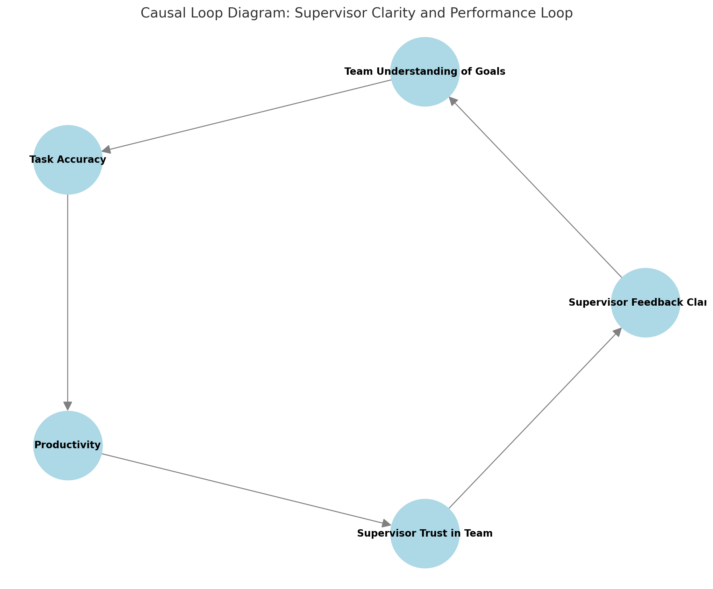

Welcome
I’m Krishna Vas Azimera, an IT Supervisor candidate passionate about ethical decision-making, systemic thinking, and cross-cultural leadership. This section of my ISR Web Portfolio demonstrates my professional development and leadership competencies in a global technology environment.
Project Overview
IT Supervisors in the U.S. must lead ethically, think systemically, and navigate cultural diversity. In this assignment, I demonstrate my ability to respond to ethical dilemmas, apply systems thinking to leadership, and adapt my management style to fit the American workplace culture.
- Ethical Dilemma Response – Decision-making under ethical pressure
- Causal Loop Diagram – Visualizing feedback and performance dynamics
- Personal Code of Ethics – My professional values and principles
- U.S. Cultural Adaptation Reflection – How I align with U.S. leadership expectations
1. Ethical Dilemma Response
A real-world scenario where I upheld data integrity and transparency as a leader.
Download Ethical Dilemma Response (PDF)2. Causal Loop Diagram
This diagram models the positive feedback loop between communication clarity and team performance.
Variables:
- Supervisor Feedback Clarity
- Team Understanding of Goals
- Task Accuracy
- Productivity
- Supervisor Trust in Team
Clear and consistent supervisor feedback improves team understanding of goals.
Better understanding reduces errors and increases task accuracy.
This boosts productivity, which builds trust between the supervisor and the team.
Increased trust enhances open communication, reinforcing the feedback loop.
{kind=link}
3. Personal Code of Ethics
A structured guide that reflects my leadership values, integrity, accountability, and data privacy commitments.
Download Personal Code of Ethics (DOCX)4. U.S. Cultural Adaptation Reflection
My leadership reflection on adapting to decentralized and diverse U.S. work environments.
Download Cultural Reflection (DOCX)